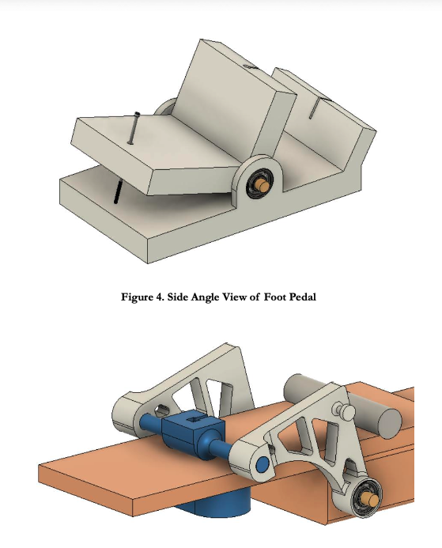
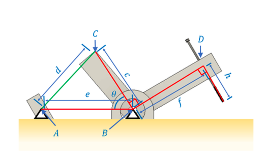

Commercial pedal steel systems often cost thousands of dollars. For a single-string lap steel guitar, the challenge was to design an affordable mechanism that was practical to make and comfortable to use. The target was to raise the string from G♯3 to A3 and return it to its original tuning.
Pedal-Actuated Guitar String Tensioner

- Group
- TAM 252 (UIUC)
- Role
- Mechanical design, static analysis, prototyping
- Skills
- Static analysis, mechanical design, CAD, additive manufacturing, vibration fundamentals
- Year
- 2023
Problem Statement
Situation
Can an affordable foot pedal change a guitar string’s pitch and return it to the original note?
Task
Raise a guitar string’s note with a foot pedal, then let it return to its starting pitch.
Action
I calculated the required string movement and built a pedal-driven mechanism with a cable and return spring.
Result
The $64.73 prototype reached within about 30 cents (roughly 1.8% in frequency) of the target note.
Introduction
↑ Back to STARProcess
↑ Back to STAR
The tuning behavior of the guitar string is governed by the vibrating string equation
\[
f = \frac{1}{2L}\sqrt{\frac{T}{\rho_L}}
\]
where \( f \) is the frequency, \( T \) the string tension, \( L \) the effective string length, and \( \rho_L \) the linear density.
Linearizing about the initial tension \( T_0 \) via a Taylor expansion yields
\[
\Delta f = \frac{\partial f}{\partial T}\Delta T
= \frac{1}{2}\frac{f_0}{T_0}\Delta T
\]
which rearranges to
\[
\Delta T = 2T_0 \frac{\Delta f}{f_0}.
\]
Geometric modeling of the string deformation relates the required tension change to the horizontal displacement \( \delta \) imposed by the mechanism. Solving the resulting strain relationship gives
\[
\delta = \sqrt{\left(\frac{\Delta T (a+b)}{2(EA)_{\text{eff}}} + \frac{b}{2}\right)^2 - \left(\frac{b}{2}\right)^2}
\]
allowing the pedal displacement to be computed directly from the desired pitch shift.
A rotary spring mechanism actuated through a Bowden cable converts pedal motion into controlled string deflection while maintaining automatic return to the original tuning state. Ball bearings were incorporated to minimize friction and improve repeatability.
Outcome
↑ Back to STAR
Using experimentally measured material properties and geometry, the mechanism was designed to achieve:
Required string displacement: \( \delta = 0.29\ \text{in} \)
Required string force: \( F_T = 5.21\ \text{lb} \)
Static analysis of the pedal linkage showed a required pedal force of
\( F_F = 3.49\ \text{lb} \),
corresponding to a mechanical advantage of
\( \text{MA} = \frac{F_T}{F_F} = 1.49 \).
The completed prototype successfully achieved the target pitch change within approximately 30 cents of the desired frequency, demonstrating proof of concept. Deviations were attributed to assembly tolerances and unintentional pedal compliance, both of which were identified as correctable in future iterations.
The total bill of materials cost was \( \$64.73 \), validating the feasibility of a low-cost alternative to commercial pedal steel tuning systems.